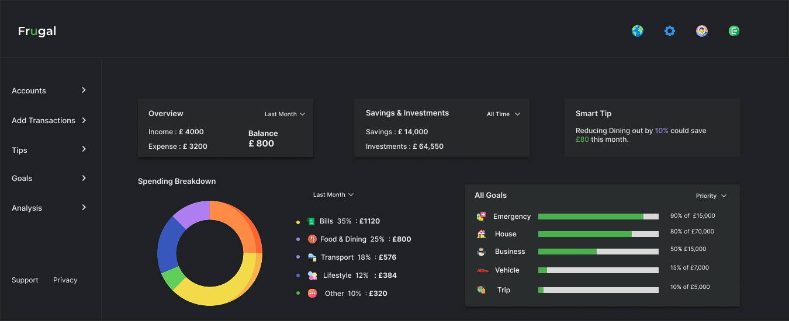

Programmatic Lead → UX Designer
Led campaigns for global brands, partnered with product, data, and creative teams, and learned what keeps users from converting.
I’m Harini Amperayani, a UI/UX Designer with a design approach rooted in clarity and empathy.
I bring 7+ years of professional experience, with a background in digital advertising. Working closely with hundreds of websites sparked my interest in user experience and led me to transition into UI/UX design and front-end development. I’ve worked hands-on across UX and front-end projects, contributing to UI improvements and UX discussions focused on usability, structure, and clarity.
Experience snapshot
Programmatic advertising taught me how to evaluate digital experiences quickly. UX training sharpened how I rebuild them with intention, structure, and user clarity.
Google UX Design Professional CertificateLed campaigns for global brands, partnered with product, data, and creative teams, and learned what keeps users from converting.
Designed responsive mobile and desktop experiences, translating user research, personas, and user flows into wireframes and high-fidelity prototypes.
Google UX certificate graduate with a focus on qualitative research, structured insights, and iterative prototyping.
Recent focus
A UX case study exploring how guided design can help households feel confident about budgeting, saving goals, and financial habits.
Read the case study